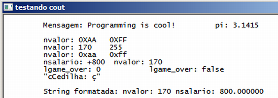

Curso completo de linguagem C++
Gameprog - Escola de programação de jogos digitais
Contato: gameprog.br@gmail.com
track03.html
03.Exibindo os tipos de dados na tela
3.1 Cout e os manipuladores

// test_cout.cpp
#include <iostream>
#include <iomanip>
using namespace std;
int main() {
system("color f0"); system ("title testando cout");
float pi = 3.1415f;
int nvalor = 170, nvidas = 0;
string txt = "Programming is cool!";
float nsalario = 800.00;
char sbuffer[255];
bool lgame_over = nvidas > 0;
cout << "\n";
cout << "\t Mensagem: " << txt << "\t\t";
cout << "pi: " << pi << "\n\n";
cout << showbase << uppercase;
cout << "\t nvalor: " << hex << nvalor << "\t" << 255 << "\n";
cout << showbase << nouppercase;
cout << "\t nvalor: " << dec << nvalor << "\t" << 255 << "\n";
cout << "\t nvalor: " << hex << nvalor << "\t" << 255 << "\n";
cout << setiosflags(ios_base::dec | ios_base::showpos );
cout << "\t nsalario: " << nsalario << "\t nvalor: " << nvalor << "\n";
cout << "\t lgame_over: " << noshowpos << lgame_over << "\t";
cout << boolalpha << "\t lgame_over: " << lgame_over << "\n";
cout << "\t \"cCedilha: \x87\" \n\n";
sprintf(sbuffer, "\t String formatada: nvalor: %d nsalario: %f \n\n" ,
nvalor, nsalario);
cout << sbuffer << "\n";
system("pause");
} // endmain
Manipuladores
No programa dessa unidade nós usamos vários manipuladores para configurar
a saída de dados do objeto cout. Veja na tabela a seguir os efeitos dos
manipuladores que usamos:
| Manipulador | Efeito | Ex. saída |
|---|
| hex | saida de inteiros em hexadecimal | 170 = aa |
| dec | saida de inteiros em decimal | 170 = 170 |
| showbase | mostra prefixo da base numérica | 170 = 0xaa |
| uppecase | liga saida hexadecimal maiúscula | 170 = 0xAA |
| nouppecase | desliga saida hexadecimal maiúscula | 170 = 0xaa |
| boolalpha | converte saida de bool para string | lgame_over = false |
| noboolalpha | converte saida de bool para inteiro | lgame_over = 0 |
| showpos | prefixa nros positivos com sinal de + | nsalario = +800 |
No site www.cplusplus.com, no link http://www.cplusplus.com/reference/iostream/
vc encontra uma tabela completa dos manipuladores. Esse website é excelente,
ele faz uma cobertura completa da linguagem c/c++.
cout << setiosflags(ios_base::dec | ios_base::showpos );
Vc pode usar a função
setiosflags() para configurar a saida de
cout. Ao usar
os manipuladores inclua a bibloteca
<iomanip> no seu programa.
cout << "\t \"cCedilha: \x87\" \n\n";
Essa linha produz esse resultado: "cCedilha: ç".
O \t produz uma tabulação, o \" insere uma aspa na saida da string na tela.
Vc pode inserir caracteres especiais como acentuação usando a tabela ascii,
apresentando esses códigos em hexadecimal como fizemos acima: \x87 = ç.
cout << "\t nsalario: " << nsalario << "\t nvalor: " << nvalor << "\n";
Veja que
cout reconhece automaticamente os tipos de dados fundamentais, diferente
da família de funções
printf() nas quais vc deve especificar a formatação
adequada para mostrar os diversos tipos de dados. Na linha de código acima
você exibe confortavelmente
string, float e int.
char sbuffer[255];
sprintf(sbuffer, "\t String formatada: nvalor: %d nsalario: %f \n\n",
nvalor, nsalario);
cout << sbuffer << "\n";
Algumas vezes, torna-se mais confortável vc imprimir dados em uma string
para depois passá-la como referência a uma função de impressão de dados
na tela ou em arquivos; isso principalmente quando vc começar a programar
com bibliotecas gráficas do Windows aonde é trabalhoso mostrar textos na
tela.